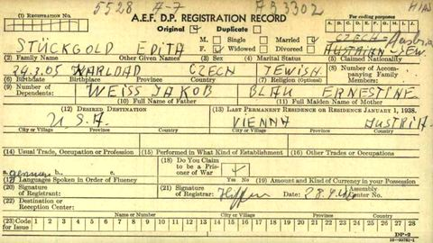
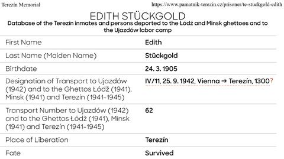
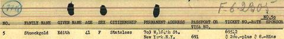

Edith Weiss
1905–1986
Life events
| Born | |
|---|---|
| Married | 1925 · Vienna, Austria Map |
| Divorced | 13 Jun 1939 · Vienna, Austria Map |
| Married | 16 Aug 1939 · Vienna, Austria Map |
| Lived | 1940 · Vienna, Austria Map · per death record of daughter, Lydia |
| Lived | |
| Lived | 24 Sep 1942 · 1020 Förstergasse 7, Vienna, Austria Map |
| Departure | 25 Sep 1942 · Theresienstadt Ghetto, Terezín, North Bohemia, Czech Republic Map · Deported from Wien to Theresienstadt. Of ~140,000 people sent to Theresienstadt, ~19,000 were alive (13%) at May 7, 1945 Soviet liberation. Only 1,300 of 15,000+ Austrians deported from Vienna to Theresienstadt survived.  |
| Lived | |
| Lived | |
| Lived | 1946 · München, Bavaria, Germany Map |
| Lived | |
| Departure | 3 Jan 1947 · Bremen, Germany Map |
| Arrival | 16 Jan 1947 · Manhattan, New York Map · To see sister Hilda Herman in NY. Fare paid for by Hebrew Aid Immigration Society (HIAS) |
| Lived | 1949 · Manhattan, New York Map |
| Lived | 1950 · Manhattan, New York Map |
| Lived | before 1951 · Manhattan, New York Map  |
| Married | about 1954 · Joseph Rotstein |
| Died | Oct 1986 · Manhattan, New York Map |
Family

Joseph Rotsteinb. 1892
Photos
Edith Weiss
Edith Weiss
Ernestine Blau

Anna Maria Schepan
Teresa Feldman
Josef Blau
Betti Borbola Fuchs
Samuel Blau
Ilonka 'Helen' Blau
+13 more

Hildegard 'Hilde' E Weiss
Edith Weiss
Robert Weiss
Ernestine Blau
Edith Weiss
Edith Weiss

Edith Weiss

Edith Weiss

Edith Weiss

Edith Weiss

Edith Weiss

Edith Weiss

Edith Weiss

Edith Weiss

Edith Weiss